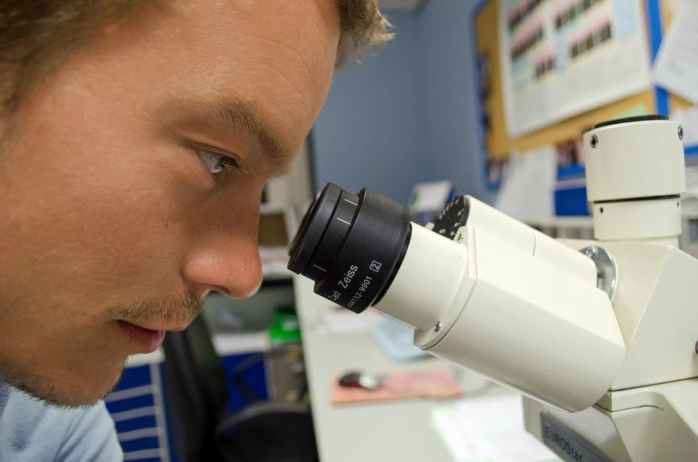

Hamar Community Science Museum
Come join us at the Community Science Museum where we’re committed to making science accessible to
all.
The aim of our museum is to create a space where everyone can experience the wonders of our
discoveries and perhaps even
ignite a lifelong passion to continue the exploration of the world around us.
We believe science should not be confined to the textbook, but brought to live through exhibits.
This is why we have
over 1000 different exhibits on the many varied subjects of science to explore. Many of these
exhibits are designed for
you to interact with and play around to see science come to life (apart from the dinosaur exhibits –
they only come to
life at night when everyone’s gone home).
Explore
For kids
We also have the Young Stars club which meets once a week on a Saturday between 10:00 and 13:00 where you’ll get to explore and experiment with our team of experts. During the school holidays we run special holiday clubs where you can join other children your age to go on a journey of discovery. Each holiday we pick a new theme to explore. To find out more about the holiday club and how you can join, send us a message.

For teachers
As a community-driven museum, we want to work with schools to create places of learning and exploring. Our team are on hand to give your students guided tours of the museum, teach them in our learning laboratory, and provide great video
presentations that will excite and inspire them. Please get in touch with us here to find out more about our facilities and to arrange a time to bring your students through for a visit.
Re searchers
Are you looking to get involved with our team of researchers and academics? Our museum offers various ways for you to use our resources and contribute towards them. We have online records, laboratory space, and a working relationship with a number of universities around the country.
